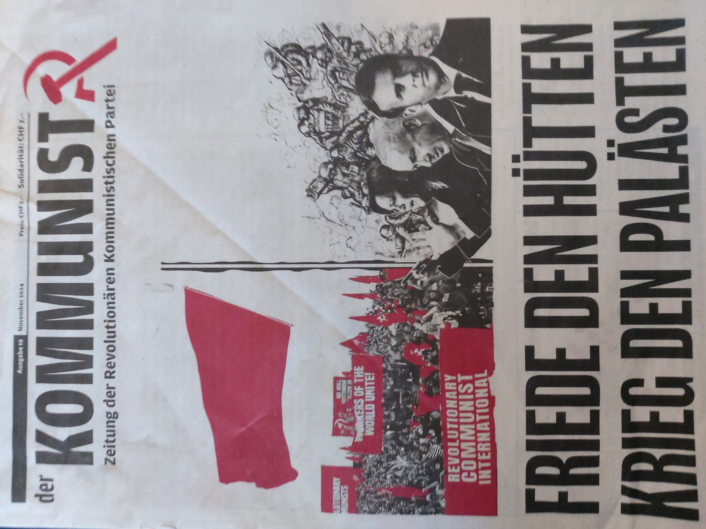

Zeitung
Unsere Zeitung 'Der Kommunist' ist ein wichtiges Organ der Revolutionären Kommunistischen Partei (RKP), das sich mit aktuellen politischen und gesellschaftlichen Themen auseinandersetzt. Sie bietet eine kritische Analyse der kapitalistischen Weltordnung und der internationalen Kämpfe der Arbeiterklasse. In 'Der Kommunist' finden sich Artikel, die sowohl die lokale als auch die globale politische Situation behandeln und die Perspektiven der revolutionären Bewegung aufzeigen. Mit dieser Zeitung möchten wir den Diskurs über die Notwendigkeit einer revolutionären Veränderung anregen und die Arbeiterbewegung stärken. Sie dient als Plattform für die Verbreitung kommunistischer Ideale und als Instrument der politischen Bildung. Neben Berichten und Analysen finden sich in der Zeitung auch Aufrufe zu Aktionen und Kampagnen, die in Solidarität mit internationalistischen Bewegungen stehen. 'Der Kommunist' ist mehr als nur eine Informationsquelle – sie ist ein Werkzeug, um den revolutionären Kampf zu organisieren und die breite Masse über die wahren Ursachen der gesellschaftlichen Krisen aufzuklären. Auf der Unterseite 'Zeitung' finden Sie mehr über unsere Ausgaben und können sich über aktuelle Themen und Analysen informieren.